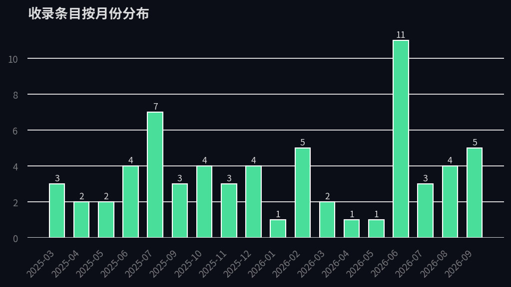
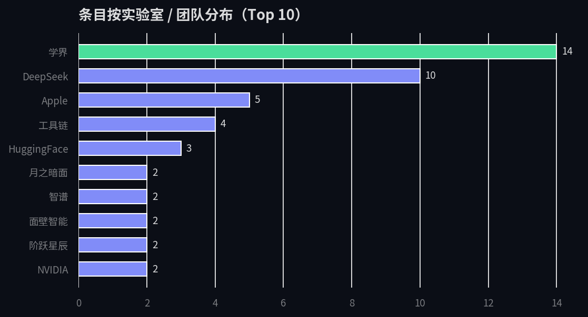
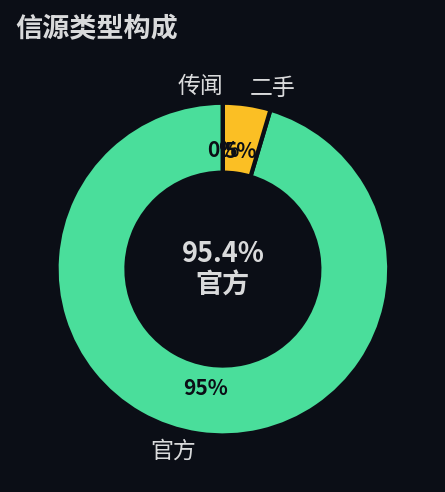
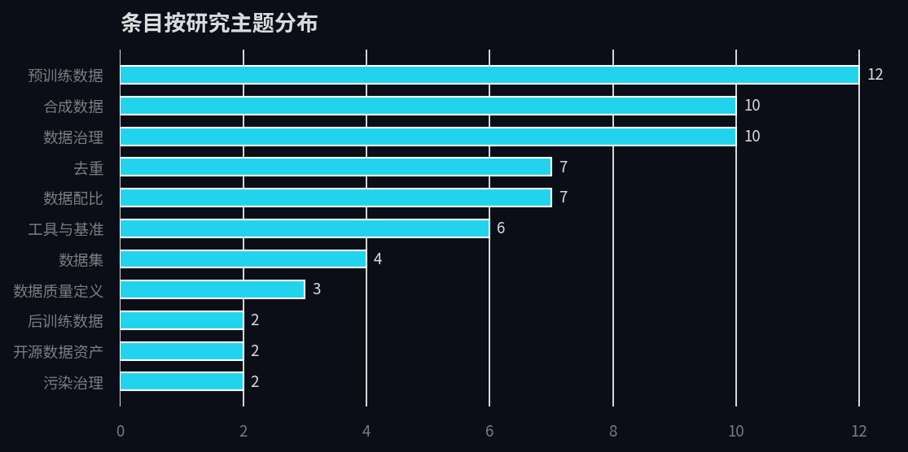

把动态页变成数据集：
65 条记录的定量画像
本页是《数据质量研究动态》的"数据层"：把页面内嵌的 65 条研究动态抽取为结构化数据集
（data/research-feed.json / .csv），
用 analysis/analyze.py 跑出可复现的统计与图表。
分析口径、脚本与原始数据全部随仓库公开，任何人可以重跑验证。
本页所有数字由 analyze.py 注入的内嵌统计块渲染，数据更新后重跑脚本即可同步。
65条
研究动态条目（论文 / 技术报告 / 官方消息）
26家
涉及的实验室、团队与机构
11个
研究主题分类
95.4%官方
一手信源占比（官方论文 / 报告 / 公告）
2025-03 → 2026-09
覆盖时间跨度（19 个月）
五个从数据里读出来的发现
每条发现都可以在下方的图表与数据集中复核。
① 数据质量研究在 2026 年年中出现明显脉冲。
收录条目在 2026-06 达到单月峰值 11 条（此前最高的 2025-07 为 7 条），与 ICAE / ICLR 周期、
国家数据局《行业高质量数据集建设行动实施方案》（2026-06-03）发布同月叠加——学术产出与政策催化在同一窗口共振。
② "预训练数据"仍是第一大主题（12 条），但"合成数据 + 数据治理"合计已与之持平（20 条）。
领域重心正从"怎么洗干净原始语料"扩展到"怎么生产和管理数据"——数据从采集对象变成了生产对象。
③ 学界与 DeepSeek 是两个最大供给极。
学界论文 14 条、DeepSeek 官方动态 10 条，两者合计占 37%；DeepSeek 是单一公司中披露最详尽的，
从 V4 技术报告到招聘启事的 MinHash 表述，构成观察工业界数据管线的罕见窗口。
④ 信源高度依赖一手材料：官方信源占 95.4%（62/65）。
这是优点（可核验）也是盲区——二手分析与独立复现只有 3 条，意味着数据集反映的是"实验室自称做了什么"，
不等于"独立验证了什么"。阅读时应把官方表述当作主张而非结论。
⑤ 主题分布呈哑铃型。
一端是基础设施层的预训练数据 / 去重 / 配比（26 条），另一端是治理层的合成数据 / 数据治理 / 污染治理（22 条），
中间的"后训练数据"仅 2 条——不是后训练不重要，而是各实验室对后训练配方的披露显著更少。
图表
由 analysis/analyze.py 从数据集直接生成；深色主题与全站一致。

图 1 · 收录条目按月份分布。峰值 2026-06（11 条），次峰 2025-07（7 条）。

图 2 · 条目按实验室 / 团队分布（Top 10，绿色为最高项）。

图 3 · 信源类型构成：官方 62 条 / 二手 3 条 / 传闻 0 条。

图 4 · 条目按研究主题分布：预训练数据 12 · 合成数据 10 · 数据治理 10 · 去重 7 · 数据配比 7 …
数据集与复现
数据从动态页内嵌的 FEED 数组抽取（analysis/extract_feed.js），
字段为 date / lab / topic / kind / kindLabel / title / body / src。
⬇ research-feed.json（完整字段） ⬇ research-feed.csv（表格预览） ⬇ stats.json（统计结果）
| 文件 | 内容 | 生成方式 |
|---|---|---|
| data/research-feed.json | 65 条动态 + 实验室 / 工具 / 趋势 / 争论等 7 个结构化数组 | node analysis/extract_feed.js |
| data/research-feed.csv | FEED 的扁平表格版（剥掉 HTML 标签），供 Excel / pandas 直接读 | 同上 |
| analysis/analyze.py | 统计 + 4 张图表（matplotlib，CJK 字体已配置） | python analysis/analyze.py |
| analysis/stats.json | 按月份 / 实验室 / 主题 / 信源的完整统计 | 由 analyze.py 生成 |
口径与局限
口径：分析对象仅是《数据质量研究动态》人工收录的 65 条，
存在收录选择偏差——它不是全量文献计量，而是"这个学习项目关注了什么"的画像。
局限：条目由人工整理，主题与实验室标签为单标签粗分；
"官方"信源指论文 / 技术报告 / 官方公告，不代表内容经过独立复现。
汇总篇与框架篇的引用论文未纳入本次统计（两页与动态篇引用零重叠，见项目 README）。